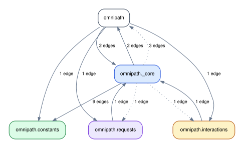
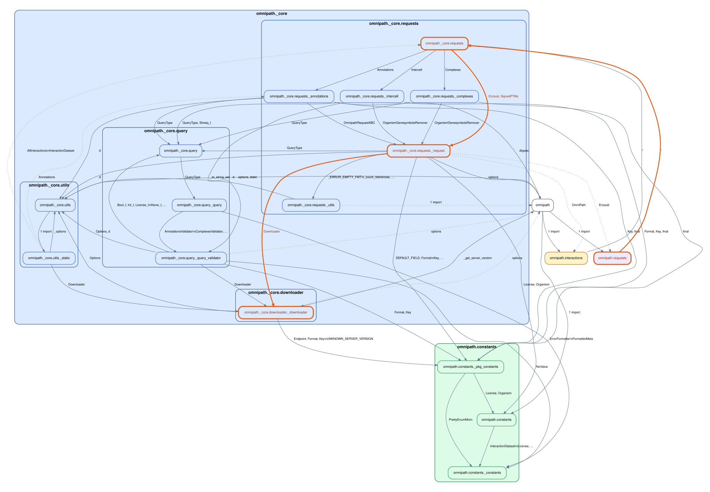

Run importscope on saezlab/omnipath
Repo: saezlab/omnipath
Config used for this guide:
docs/examples/omnipath/.importscope.yml
Equivalent setup:
importscope init
importscope config package set omnipath
importscope config include add 'omnipath/__init__.py' 'omnipath/requests.py' 'omnipath/interactions.py' 'omnipath/constants/**' 'omnipath/_core/downloader/**' 'omnipath/_core/requests/**' 'omnipath/_core/query/__init__.py' 'omnipath/_core/query/_query.py' 'omnipath/_core/query/_query_validator.py' 'omnipath/_core/utils/__init__.py' 'omnipath/_core/utils/_static.py'
importscope config exclude add 'docs/**' 'tests/**'
importscope config module-group-depth set 3
importscope config allowed-private add omnipath._core.downloader omnipath._core.query omnipath._core.requests omnipath._core.utils
This example is also intentionally small. It answers one question only:
- how
omnipath.requestsreaches the internal request engine and downloader
Run
git clone https://github.com/saezlab/omnipath.git
cd omnipath
importscope analyze \
--graph package-dependency \
--graph symbol-labeled-module-dependency \
--out .cache/importscope-omnipath \
--format svg --format md --format json
Current scope:
19modules57internal import edges1strongly connected component
The config keeps only:
omnipath,omnipath.requests, andomnipath.interactions_core.requests_core.query_core.downloader- a small amount of runtime helper code
Start with the package graph

This is the graph to read first. It stays focused on one flow:
- public facade
- request engine
- query support
- downloader
The exact colors are auto-derived, but the useful architectural split is still the same: public facade, request engine, query support, downloader, and a small runtime helper area.
One follow-up query
One current path is:
{
"mode": "path",
"paths": [
[
"omnipath.requests",
"omnipath._core.requests",
"omnipath._core.requests._request",
"omnipath._core.downloader._downloader"
]
]
}
If you want the path highlighted on the graph directly:
importscope inspect \
path omnipath.requests omnipath._core.downloader._downloader \
--highlight \
--graph-format both
Highlighted output:
